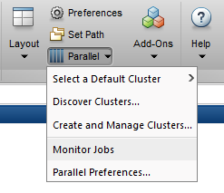

Mathematics Applications#
!!! cite “Galileo Galilei”
Nature is written in mathematical language.
Mathematica#
Mathematica is a general computing environment, organizing many algorithmic, visualization, and user interface capabilities within a document-like user interface paradigm.
Fonts#
To remotely use the graphical front-end, you have to add the Mathematica fonts to the local font manager.
Linux Workstation#
You need to copy the fonts from ZIH systems to your local system and expand the font path
marie@local$ scp -r dataport:/software/rapids/r24.04/Mathematica/13.0.1/SystemFiles/Fonts/Type1/
~/.fonts
marie@local$ xset fp+ ~/.fonts/Type1
!!! important “SCP command”
The previous SCP command requires that you have already set up your [SSH configuration
](../access/ssh_login.md#configuring-default-parameters-for-ssh).
Windows Workstation#
You have to add additional Mathematica fonts at your local PC download fonts archive.
If you use Xming as X-server at your PC (refer to remote access from Windows, follow these steps:
Create a new folder
Mathematicain the directoryfontsof the installation directory of Xming (mostly:C:\\Programme\\Xming\\fonts\\)Extract the fonts archive into this new directory
Mathematica. In result you should have the two directoriesDBFandType1.Add the path to these font files into the file
font-dirs. You can find it inC:\\Programme\\Xming\\.
# font-dirs
# comma-separated list of directories to add to the default font path
# defaults are built-ins, misc, TTF, Type1, 75dpi, 100dpi
# also allows entries on individual lines
C:\Programme\Xming\fonts\dejavu,C:\Programme\Xming\fonts\cyrillic
C:\Programme\Xming\fonts\Mathematica\DBF
C:\Programme\Xming\fonts\Mathematica\Type1
C:\WINDOWS\Fonts
Using Textual Interface of Mathematica#
Once a Mathematica module is loaded, you can use Mathematica’s textual interface via the command
math.
marie@login$ module load release/24.04 Mathematica/13.0.1
[...]
marie@login$ math
Mathematica 13.0.1 Kernel for Linux x86 (64-bit)
Copyright 1988-2022 Wolfram Research, Inc.
In[1]:= Sum[i, {i,1,100}]
Out[1]= 5050
In[2]:= Quit[];
Mathematica and Slurm#
For running compute intensive and long calculations, please use the batch system
Slurm. To submit Mathematica jobs to the resource scheduler Slurm,
the Mathematica commands to be executed must be containined in a single .m-script. The .m-script
will then be passed to the math command in a job file.
??? example “1. Hello-world-script for Mathematica”
The file `math_example.m` is your input script that includes the calculation statements for
Mathematica.
```
Print["Hello, World!"];
(* Perform some calculations *)
x = 10;
y = 20;
sum = x + y;
product = x * y;
Print["The sum of ", x, " and ", y, " is: ", sum];
Print["The product of ", x, " and ", y, " is: ", product];
```
??? example “2. Job file”
The file `jobfile.sh` is your jobfile with the resource specifications and the commands to
executed.
```bash
#!/bin/bash
#SBATCH --time=00:05:00
#SBATCH --ntasks=1
# prepare environment; load module
module purge
module load release/24.04 Mathematica/13.0.1
# run the math kernel; perform calculations
math -script math_example.m > math.output
```
??? example “3. Submit the job”
Invoke the command `sbatch jobfile.sh` to submit the job to the scheduler. The scheduler will
provide you the unqiue job id.
```
marie@login$ sbatch jobfile.sh
Submitted batch job 10705392
```
All output of the `math` command will be saved in the file `math.output`.
!!! note
Mathematica licenses are limited.
There exist two types, MathKernel and SubMathKernel licenses. Every sequential job you start will consume a MathKernel license of which we only have 61. We do have, however, 488 SubMathKernel licenses, so please, don’t start many sequential jobs but try to parallelize your calculation, utilizing multiple SubMathKernel licenses per job, in order to achieve a more reasonable license usage.
MATLAB#
MATLAB is a numerical computing environment and programming language. Created by The MathWorks, MATLAB allows easy matrix manipulation, plotting of functions and data, implementation of algorithms, creation of user interfaces, and interfacing with programs in other languages. Although it specializes in numerical computing, an optional toolbox interfaces with the Maple symbolic engine, allowing it to be part of a full computer algebra system.
Running MATLAB via the batch system could look like this (for 2 Gb RAM per core and 12 cores reserved). Please adapt this to your needs!
marie@login$ module load MATLAB
marie@login$ srun --time=8:00 --cpus-per-task=12 --mem-per-cpu=2000 --pty --x11=first bash
marie@compute$ matlab
With following command you can see a list of installed software - also the different versions of MATLAB.
marie@login$ module avail MATLAB
Please choose one of these, then load the chosen software with the command:
marie@login$ module load MATLAB/<version>
Or use:
marie@login$ module load MATLAB
(then you will get the most recent MATLAB version. Refer to the modules page for details.)
Interactive MATLAB-GUI#
If you have a connection with X11 forwarding enabled.
Interactive#
You should allocate a CPU for your working with command:
marie@login$ srun --time=01:00:00 --pty --x11=first bash
now you can call “matlab” (you have 1h to work with the MATLAB-GUI)
MATLAB container#
We provide MATLAB containers that can be started as following:
marie@login$ start_matlab.sh
Non-interactive#
Using Scripts
You have to start matlab-calculation as a Batch-Job via command
marie@login$ srun --pty matlab -batch <basename_of_your_matlab_script>
# NOTE: you must omit the file extension ".m" here, because -r expects a matlab command or function call, not a file-name.
!!! info “License occupying”
While running your calculations as a script this way is possible, it is generally frowned upon,
because you are occupying MATLAB licenses for the entire duration of your calculation when doing so.
Since the available licenses are limited, it is highly recommended you first compile your script via
the MATLAB Compiler (`mcc`) before running it for a longer period of time on our systems. That way,
you only need to check-out a license during compile time (which is relatively short) and can run as
many instances of your calculation as you'd like, since it does not need a license during runtime
when compiled to a binary.
You can find detailed documentation on the MATLAB compiler at MathWorks’ help pages.
Using the MATLAB Compiler#
Compile your .m script into a binary:
marie@login$ mcc -m name_of_your_matlab_script.m -o compiled_executable -R -nodisplay -R -nosplash
This will also generate a wrapper script called run_compiled_executable.sh which sets the required
library path environment variables in order to make this work. It expects the path to the MATLAB
installation as an argument, you can use the environment variable $EBROOTMATLAB as set by the
module file for that.
Then run the binary via the wrapper script in a job (just a simple example, you should be using an sbatch script for that)
marie@login$ srun ./run_compiled_executable.sh ${EBROOTMATLAB}
Parallel MATLAB#
With ‘local’ Configuration#
If you want to run your code in parallel, please request as many cores as you need!
Start a batch job with the number
Nof processes, e.g.,srun --cpus-per-task=4 --pty --x11=first bash -lRun MATLAB with the GUI or the CLI or with a script
Inside MATLAB use
parpool open 4to start parallel processing
!!! example “Example for 1000*1000 matrix-matrix multiplication”
```bash
R = distributed.rand(1000);
D = R * R
```
Close parallel task using
delete(gcp('nocreate'))
With parfor#
Start a batch job with the number
Nof processes (,e.g.,N=12)Inside use
matlabpool open Normatlabpool(N)to start parallel processing. It will use the ‘local’ configuration by default.Use
parforfor a parallel loop, where the independent loop iterations are processed byNprocesses
!!! example
```bash
parfor i = 1:3
c(:,i) = eig(rand(1000));
end
```
Please refer to the documentation help parfor for further information.
MATLAB Parallel Computing Toolbox#
In the following, the steps to configure MATLAB to submit jobs to a cluster, retrieve results, and debug errors are outlined.
Configuration – MATLAB client on the cluster#
After logging into the HPC system, you configure MATLAB to run parallel jobs on the HPC system by
calling the shell script configCluster.sh. This only needs to be called once per version of
MATLAB.
marie@login$ module load MATLAB
marie@login$ configCluster.sh
Jobs will now default to the HPC system rather than submit to the local machine.
Installation and Configuration – MATLAB client off the cluster#
The MATLAB support package for ZIH Systems can be found as follows:
Windows:
Linux/Mac:
Download the appropriate archive file and start MATLAB. The archive file should be extracted in the location returned by calling
>> userpath
Configure MATLAB to run parallel jobs on ZIH Systems by calling configCluster. configCluster
only needs to be called once per version of MATLAB.
>> configCluster
Submission to the remote cluster requires SSH credentials. You will be prompted for your SSH username and password or identity file (private key). The username and location of the private key will be stored in MATLAB for future sessions. Jobs will now default to the cluster rather than submit to the local machine.
!!! note
If you would like to submit to the local machine then run the following command:
```matlab
>> % Get a handle to the local resources
>> c = parcluster('local');
```
Configuring Jobs#
Prior to submitting the job, you can specify various parameters to pass to your jobs, such as queue,
e-mail, walltime, etc. Only MemPerCpu and QueueName are required.
>> % Get a handle to the cluster
>> c = parcluster;
[REQUIRED]
>> % Specify memory to use, per core (default: 2gb)
>> c.AdditionalProperties.MemPerCpu = '4gb';
>> % Specify the walltime (e.g., 5 hours)
>> c.AdditionalProperties.WallTime = '05:00:00';
[OPTIONAL]
>> % Specify the account to use
>> c.AdditionalProperties.Account = 'account-name';
>> % Request constraint
>> c.AdditionalProperties.Constraint = 'a-constraint';
>> % Request job to run on exclusive node(s) (default: false)
>> c.AdditionalProperties.EnableExclusive = true;
>> % Request email notification of job status
>> c.AdditionalProperties.EmailAddress = 'user-id@tu-dresden.de';
>> % Specify number of GPUs to use (GpuType is optional)
>> c.AdditionalProperties.GpusPerNode = 1;
>> c.AdditionalProperties.GpuType = 'gpu-card';
>> % Specify the queue to use
>> c.AdditionalProperties.Partition = 'queue-name';
>> % Specify a reservation to use
>> c.AdditionalProperties.Reservation = 'a-reservation';
Save changes after modifying AdditionalProperties for the above changes to persist between MATLAB
sessions.
>> c.saveProfile
To see the values of the current configuration options, display AdditionalProperties.
>> % To view current properties
>> c.AdditionalProperties
You can unset a value when no longer needed.
>> % Turn off email notifications
>> c.AdditionalProperties.EmailAddress = '';
>> c.saveProfile
Interactive Jobs - MATLAB Client on the Cluster#
To run an interactive pool job on the ZIH systems, continue to use parpool as you’ve done before.
>> % Get a handle to the cluster
>> c = parcluster;
>> % Open a pool of 64 workers on the cluster
>> pool = c.parpool(64);
Rather than running local on your machine, the pool can now run across multiple nodes on the cluster.
>> % Run a parfor over 1000 iterations
>> parfor idx = 1:1000
a(idx) = …
end
Once you are done with the pool, delete it.
>> % Delete the pool
>> pool.delete
Independent Batch Job#
Use the batch command to submit asynchronous jobs to the HPC system. The batch command will return
a job object which is used to access the output of the submitted job. See the MATLAB documentation
for more help on batch.
>> % Get a handle to the cluster
>> c = parcluster;
>> % Submit job to query where MATLAB is running on the cluster
>> job = c.batch(@pwd, 1, {}, ...
'CurrentFolder','.', 'AutoAddClientPath',false);
>> % Query job for state
>> job.State
>> % If state is finished, fetch the results
>> job.fetchOutputs{:}
>> % Delete the job after results are no longer needed
>> job.delete
To retrieve a list of currently running or completed jobs, call parcluster to retrieve the cluster
object. The cluster object stores an array of jobs that were run, are running, or are queued to
run. This allows us to fetch the results of completed jobs. Retrieve and view the list of jobs as
shown below.
>> c = parcluster;
>> jobs = c.Jobs;
Once you have identified the job you want, you can retrieve the results as done previously.
fetchOutputs is used to retrieve function output arguments; if calling batch with a script, use
load instead. Data that has been written to files on the cluster needs be retrieved directly
from the filesystem (e.g. via ftp). To view results of a previously completed job:
>> % Get a handle to the job with ID 2
>> job2 = c.Jobs(2);
!!! note
You can view a list of your jobs, as well as their IDs, using the above `c.Jobs` command.
```matlabsession
>> % Fetch results for job with ID 2
>> job2.fetchOutputs{:}
```
Parallel Batch Job#
You can also submit parallel workflows with the batch command. Let’s use the following example
for a parallel job, which is saved as parallel_example.m.
function [t, A] = parallel_example(iter)
if nargin==0
iter = 8;
end
disp('Start sim')
t0 = tic;
parfor idx = 1:iter
A(idx) = idx;
pause(2)
idx
end
t = toc(t0);
disp('Sim completed')
save RESULTS A
end
This time when you use the batch command, to run a parallel job, you will also specify a MATLAB
Pool.
>> % Get a handle to the cluster
>> c = parcluster;
>> % Submit a batch pool job using 4 workers for 16 simulations
>> job = c.batch(@parallel_example, 1, {16}, 'Pool',4, ...
'CurrentFolder','.', 'AutoAddClientPath',false);
>> % View current job status
>> job.State
>> % Fetch the results after a finished state is retrieved
>> job.fetchOutputs{:}
ans =
8.8872
The job ran in 8.89 seconds using four workers. Note that these jobs will always request N+1 CPU cores, since one worker is required to manage the batch job and pool of workers. For example, a job that needs eight workers will consume nine CPU cores.
You might run the same simulation but increase the Pool size. This time, to retrieve the results later, you will keep track of the job ID.
!!! note
For some applications, there will be a diminishing return when allocating too many workers, as
the overhead may exceed computation time.
```matlabsession
>> % Get a handle to the cluster
>> c = parcluster;
>> % Submit a batch pool job using 8 workers for 16 simulations
>> job = c.batch(@parallel_example, 1, {16}, 'Pool', 8, ...
'CurrentFolder','.', 'AutoAddClientPath',false);
>> % Get the job ID
>> id = job.ID
id =
4
>> % Clear job from workspace (as though you quit MATLAB)
>> clear job
```
Once you have a handle to the cluster, you can call the findJob method to search for the job with
the specified job ID.
>> % Get a handle to the cluster
>> c = parcluster;
>> % Find the old job
>> job = c.findJob('ID', 4);
>> % Retrieve the state of the job
>> job.State
ans =
finished
>> % Fetch the results
>> job.fetchOutputs{:};
ans =
4.7270
The job now runs in 4.73 seconds using eight workers. Run code with different number of workers to determine the ideal number to use. Alternatively, to retrieve job results via a graphical user interface, use the Job Monitor (Parallel > Monitor Jobs).

{: summary=”Retrieve job results via GUI using the Job Monitor.” align=”center”}Debugging#
If a serial job produces an error, call the getDebugLog method to view the error log file. When
submitting independent jobs, with multiple tasks, specify the task number.
>> c.getDebugLog(job.Tasks(3))
For Pool jobs, only specify the job object.
>> c.getDebugLog(job)
When troubleshooting a job, the cluster admin may request the scheduler ID of the job. This can be
derived by calling schedID.
>> schedID(job)
ans =
25539
Further Reading#
To learn more about the MATLAB Parallel Computing Toolbox, check out these resources: